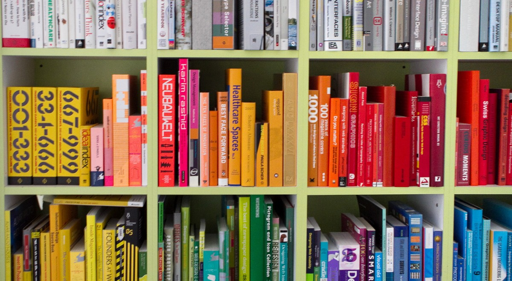

WELCOME
Library Management System
Much of the functioning of a library could be automated using the available technologies. Instead of dealing with files (papers) the use of a good Database together with a proper front end would not only reduce the operating cost but also make the task of the Librarian easier. The most important thing is that an automated system of this sort can be customized to suit the needs of the patrons or users and provide good service to them.
Aim of the project is to develop software which would automate the functioning of a library over a network, be it Internet or Intranet
The idea of providing online automation finds its major use in the case of members of a College Libray wherein they might have to go there to find to their disappointment that the book that they are looking for isn't available. The system automates all the basic tasks like keeping record of all the book issuals, returns and fining etc.